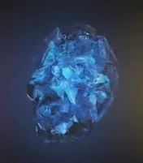
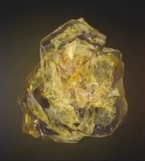
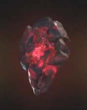
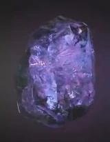
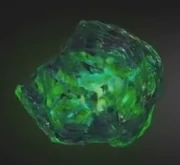

| Name | Color | Info | Imeg |
| Пространство | Синий | Он способен предоставить доступ к любой точке во вселенной, если его использовать правильно |  |
| Разум | Желтый | Камень может подавлять умы других, подчиняя их воле владельца, а также способен проецировать сознание пользователя на высший уровень существования |  |
| Реальность | Крастный | Камень бесконечности, остаток сингулярности, которая существовала до начала вселенной. |  |
| Силы | Пурпурный | Камень силы - один из самых могущественных артефактов во Вселенной, так как он способен убить почти каждое существо, которое прикоснулась к камню |  |
| Времени | Зеленый | Этот камень может манипулировать временем, даже в таких местах, в которых нет времени, как Тёмное измерение |  |
| Души | Оранжевый | один из шести камней бесконечности, остаток сингулярности, который предшествует Вселенной | |